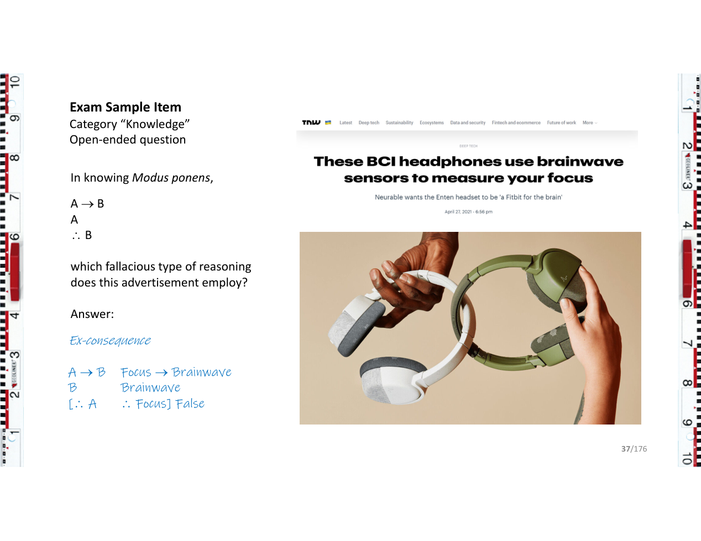
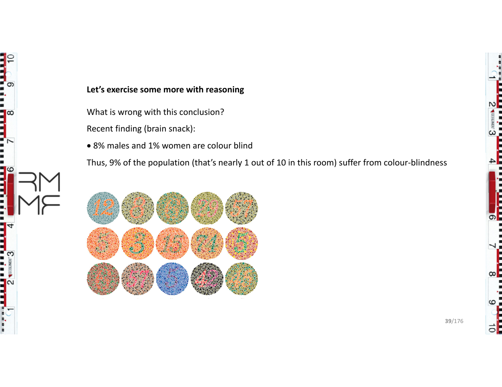
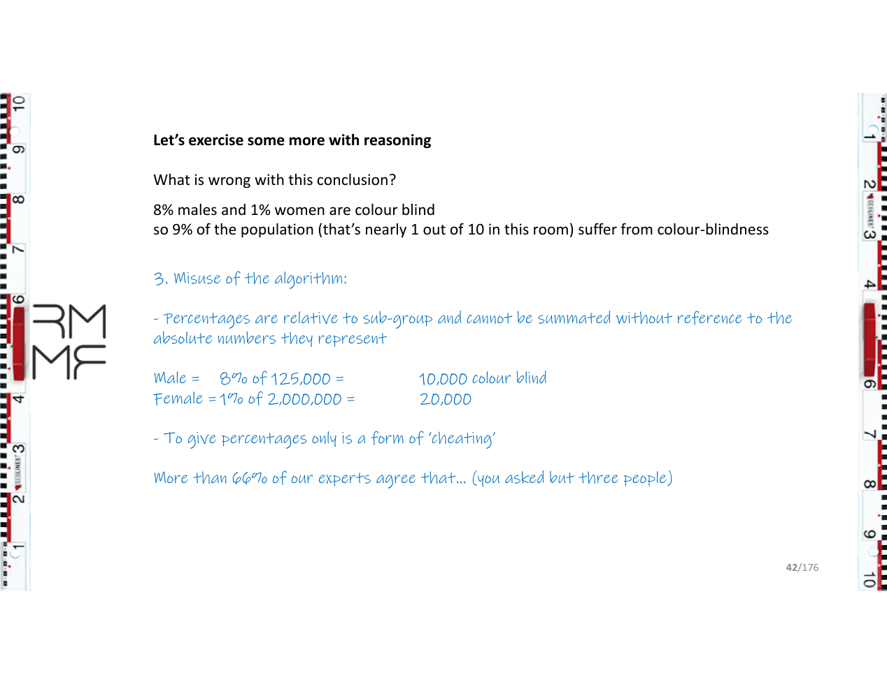
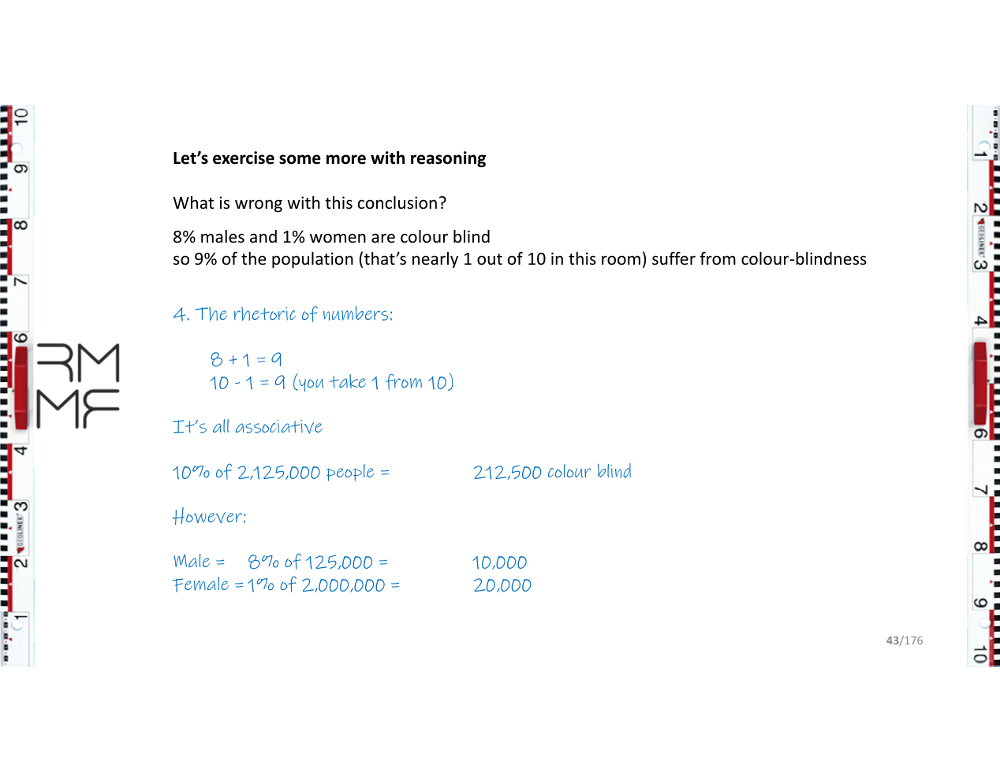
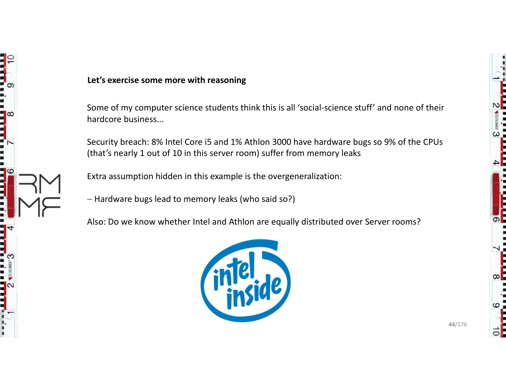
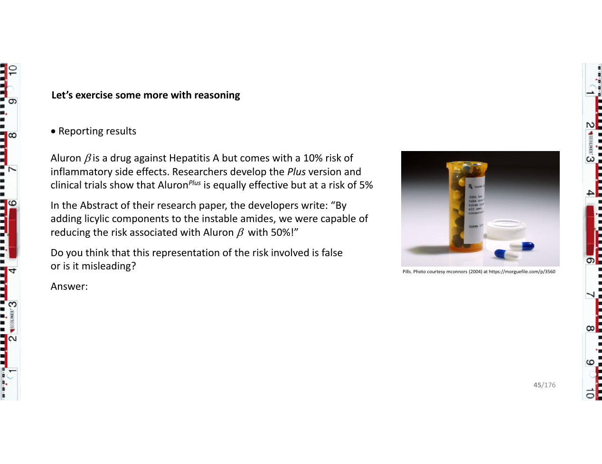
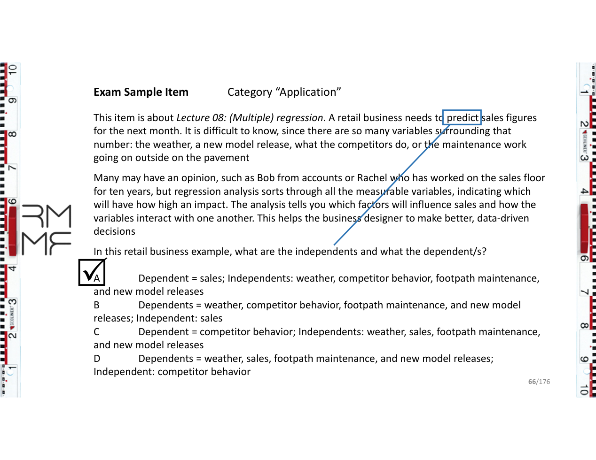
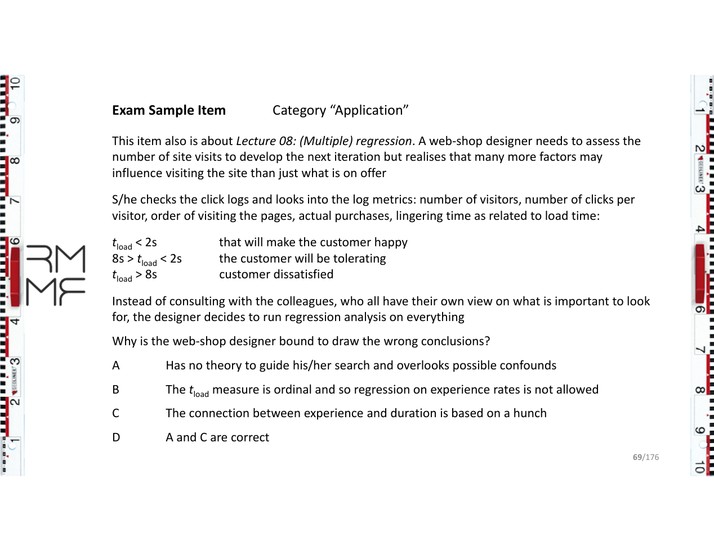
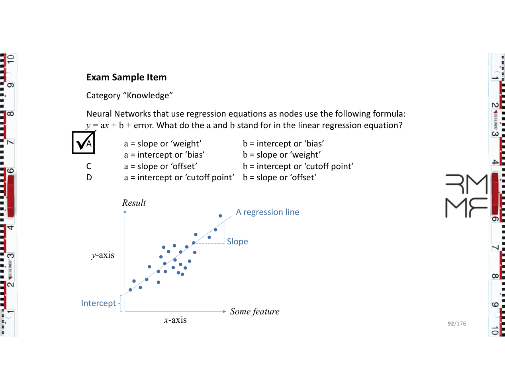
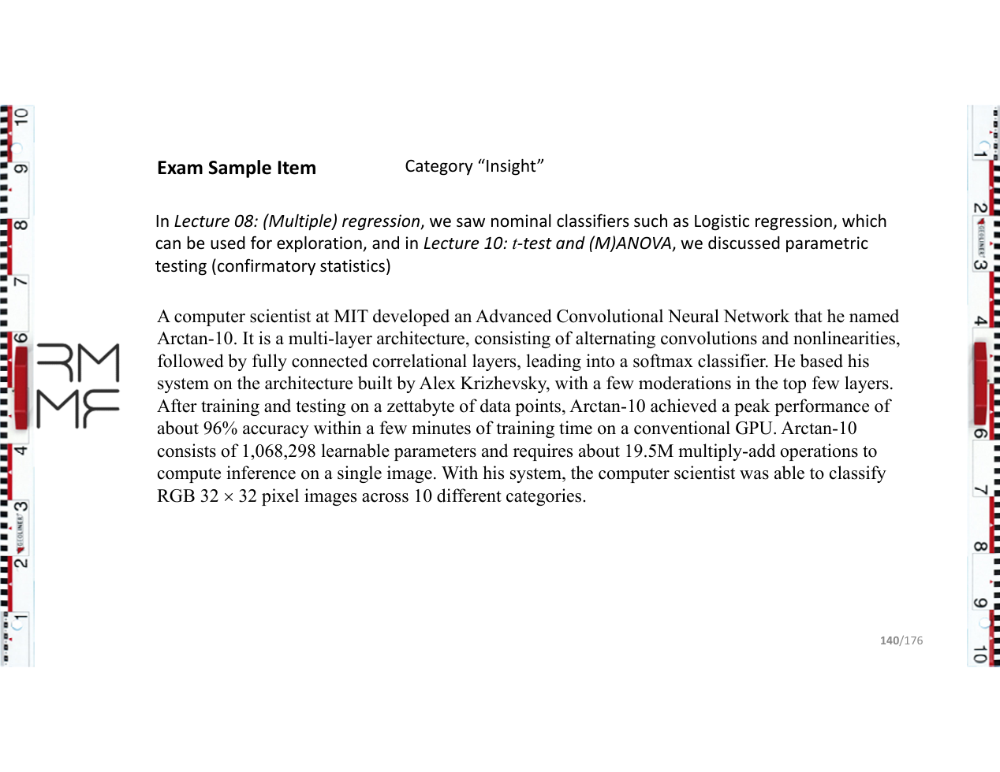

EXAM / L12
L12 · 逐题复习（9 组）
解析默认收起，可先选答案再展开核对，作答与错题自动保存。
广告里的肯定后件

12 Σ SD5979 Response 2026 11 19.pdf第 36 页 · 点图放大
我的作答
查看老师答案与逐项解析 ▾
推理形式
Focus → Brainwave；观察 Brainwave，不能推出 Focus。老师称 ex-consequence。
老师原答案与延续页

12 Σ SD5979 Response 2026 11 19.pdf第 37 页 · 点图放大
8% + 1% 为什么不是总体 9%？

12 Σ SD5979 Response 2026 11 19.pdf第 39 页 · 点图放大
我的作答
查看老师答案与逐项解析 ▾
分母问题
8% 与 1% 分别以男女子群为分母，不能直接相加。
绝对数检查
老师例子：男性 125,000 × 8% = 10,000；女性 2,000,000 × 1% = 20,000。低比例不一定意味着绝对人数少。
隐藏假设
男女数量是否相等？是否只有两个类别？CPU 变体还额外假设硬件 bug 一定造成内存泄漏。
老师原答案与延续页

12 Σ SD5979 Response 2026 11 19.pdf第 40 页 · 点图放大

12 Σ SD5979 Response 2026 11 19.pdf第 41 页 · 点图放大

12 Σ SD5979 Response 2026 11 19.pdf第 42 页 · 点图放大

12 Σ SD5979 Response 2026 11 19.pdf第 43 页 · 点图放大

12 Σ SD5979 Response 2026 11 19.pdf第 44 页 · 点图放大
风险从 10% 降到 5%

12 Σ SD5979 Response 2026 11 19.pdf第 45 页 · 点图放大
我的作答
查看老师答案与逐项解析 ▾
判断
老师答案：并非虚假，但可能误导；相对下降 50%，绝对下降 5 个百分点。
老师原答案与延续页

12 Σ SD5979 Response 2026 11 19.pdf第 46 页 · 点图放大
零售回归：谁是自变量？

12 Σ SD5979 Response 2026 11 19.pdf第 65 页 · 点图放大
我的作答
查看老师答案与逐项解析 ▾
A正确
Sales 是被预测的结果；天气、竞争者行为、道路维护、新产品发布是 predictors。
C角色错误
本题要预测 sales，不是 competitor behavior；sales 也不应被当作这里的 predictor。
D角色错误
把 competitor behavior 放成唯一 IV，又把 sales 和其他 predictors 都放进 DV。
这些选项的概念，课件正文是否出现过？
检索全部 903 页（排除题目、答案页与参考文献页）。
dependent variable
正文原词命中 32 页
independent variable
正文原词命中 21 页
老师原答案与延续页

12 Σ SD5979 Response 2026 11 19.pdf第 66 页 · 点图放大
把所有日志丢进回归就够了吗？

12 Σ SD5979 Response 2026 11 19.pdf第 69 页 · 点图放大
我的作答
查看老师答案与逐项解析 ▾
B理由不符
本题老师没有用“ordinal 不允许回归”概括核心错误。
C不完整
加载时间与体验的关系出于猜想是问题之一，但还漏掉 A。
D正确
A 与 C 都对；71 页列出误点、猫碰鼠标、竞争者浏览等其他解释。
这些选项的概念，课件正文是否出现过？
检索全部 903 页（排除题目、答案页与参考文献页）。
老师原答案与延续页

12 Σ SD5979 Response 2026 11 19.pdf第 70 页 · 点图放大

12 Σ SD5979 Response 2026 11 19.pdf第 71 页 · 点图放大
y = ax + b：weight 与 bias

12 Σ SD5979 Response 2026 11 19.pdf第 91 页 · 点图放大
我的作答
查看老师答案与逐项解析 ▾
A正确
a = slope / weight；b = intercept / bias。
B定义颠倒
slope 与 intercept 交换了。
C术语不符
本题 a 不是 offset，b 不是 cutoff。
这些选项的概念，课件正文是否出现过？
检索全部 903 页（排除题目、答案页与参考文献页）。
cutoff
未检出独立正文原词命中
这不证明概念从未以其他表达讲过；不把它直接当成该选项错误的理由。
老师原答案与延续页

12 Σ SD5979 Response 2026 11 19.pdf第 92 页 · 点图放大
大模型与小学生：谁的研究更有力？

12 Σ SD5979 Response 2026 11 19.pdf第 140 页 · 点图放大
完整题目与情境延续

12 Σ SD5979 Response 2026 11 19.pdf第 141 页 · 点图放大

12 Σ SD5979 Response 2026 11 19.pdf第 142 页 · 点图放大
我的作答
查看老师答案与逐项解析 ▾
选择
Dài ān；按 144 页的比较，小学生的算术研究更好。
证据维度
技术稳健性、测量可靠性、数据采集透明度、可重复性、测量水平、理论效度、检验强度和允许的结论。逐项比较见原表。
为什么不选其他人？
更复杂的架构、更多数据、权威作者、更快训练，都不能替代上面这些研究质量证据。
老师原答案与延续页
Naïve Bayes 与 multicollinearity
我的作答
查看老师答案与逐项解析 ▾
A正确
按老师答案：无论类别多相关，都剔除与给定假设不一致的类别。
这些选项的概念，课件正文是否出现过？
检索全部 903 页（排除题目、答案页与参考文献页）。
Principal Component Analysis
正文原词命中 14 页
multicollinearity
正文原词命中 4 页
老师原答案与延续页
猫狗题的新问法：nominal measurement

12 Σ SD5979 Response 2026 11 19.pdf第 169 页 · 点图放大
我的作答
查看老师答案与逐项解析 ▾
A · 两个类别
Dogs and Cats。原 L09 问“实验条件”，这里改问“名义测量类别”；两份原答案都写狗与猫，但作答应对应当前问题的用词。
B · 分割依据
颜色；猫与白色重合，狗与黑色重合。
C · 不会自我证伪的原因
按老师解释：缺乏概念知识，也没有推理系统进行逻辑验证。
老师原答案与延续页

12 Σ SD5979 Response 2026 11 19.pdf第 172 页 · 点图放大